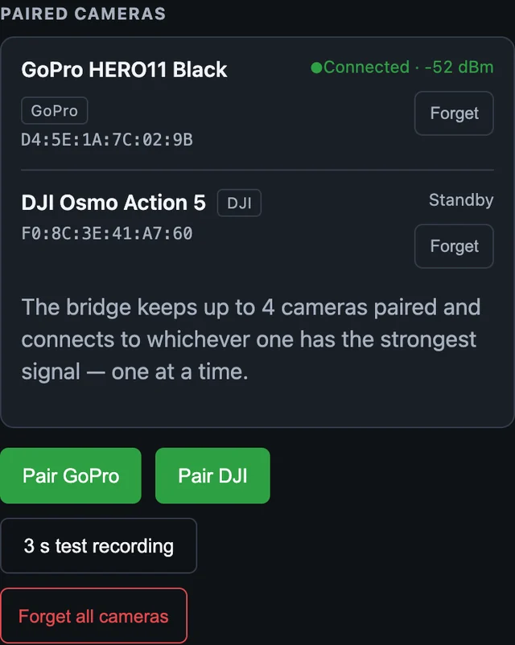
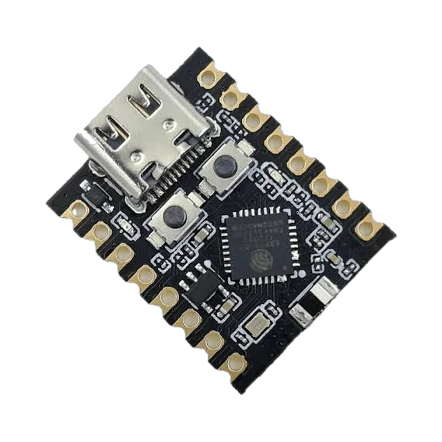

Scheda RecLink per camere
In sviluppo0,68 g, 12 × 13 mm, quattro pad da saldare: GND, 5V, TX e RX.
TX FC a RX, RX FC a TX
Pre-release 0.2.1. Provato a banco, mai in volo.
Firmware ESP32 open source che registra all'arm o da un interruttore e mostra lo stato della camera nell'OSD. Non tocca mai il volo e sta su una scheda da 0,68 g.

RecLink legge dal flight controller e scrive testo OSD. Niente di ciò che invia può cambiare il modo in cui vola il quad.
Scrive solo testo OSD. Il codice rifiuta i comandi di arming, RC e PID.
La scheda torna in circa 300 ms e il quad resta pilotabile.
Il punto di accesso si spegne entro 100 ms. In volo gira solo il Bluetooth.
I comandi partono e si confermano dopo, quindi una camera lenta non blocca nulla.
Una piccola scheda sta tra Betaflight e la camera. Legge stato dell'arm, interruttori e ora GPS via MSP, e parla con la camera via Bluetooth LE.
Quattro righe da 16 caratteri, composte con 22 token che piazzi tu.
Arm, interruttore, uno dei due o entrambi. La camera conferma ogni comando.
Un interruttore a 2-6 posizioni sceglie risoluzione, frame rate e lente su GoPro.
Un interruttore a impulso aggiunge un tag HiLight su GoPro, il Quick-Switch su DJI.
Qualsiasi mix di GoPro e DJI. All'accensione sceglie il segnale più forte.
L'ora arriva dal GPS del flight controller, così i filmati hanno la data giusta.
La modalità digitale usa solo i glifi che i goggles DJI sanno disegnare.

Collegati al Wi-Fi RECLINK da disarmato. Abbina le camere, crea le zone, disegna l'OSD e aggiorna il firmware. Nessuna app, nessun cloud, nessun account.


Due marchi via Bluetooth LE. Cosa è verificato e cosa no.
Open GoPro BLE
Registrazione, telemetria OSD e zone funzionano su una HERO11 Black. Gli altri modelli usano la stessa API.
Open GoPro BLE
Dovrebbe funzionare, ma potrebbe servire id di impostazione che questo firmware non usa ancora.
DUML via BLE
Implementato dalla demo open source di DJI. Nessuna camera DJI è stata ancora provata.
HERO8 e precedenti non hanno l'API Bluetooth e non sono supportate.

Provato: provato a banco su hardware. Non confermato: implementato, in attesa di una prova su hardware.

Lo stesso firmware gira su tutte e tre. Non ti serve la scheda RecLink.
0,68 g, 12 × 13 mm, quattro pad da saldare: GND, 5V, TX e RX.
TX FC a RX, RX FC a TX

Una scheda minuscola ed economica. Caricala dal browser via USB.
TX FC al pin 7, RX al pin 6

Il LED RGB mostra lo stato a colori. Caricala via USB.
TX FC al pin 4, RX al pin 5